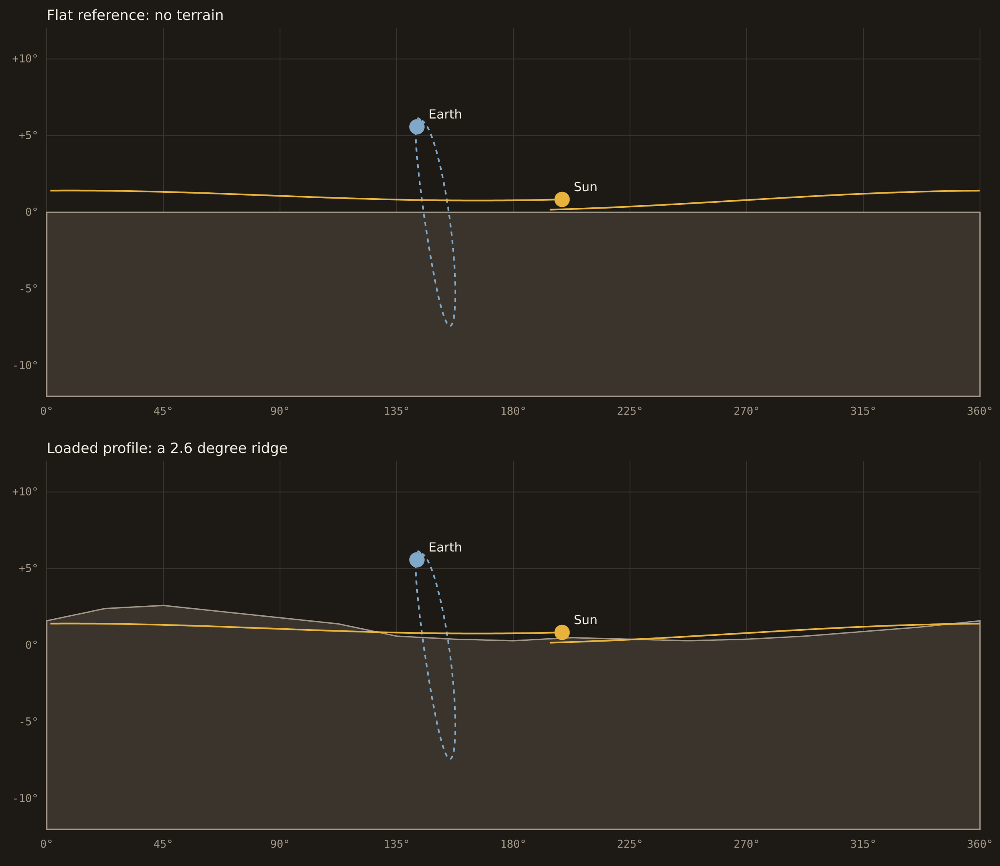

NASA Space Apps Challenge 2026 · Lunar Landing Site Navigator
Solar power and communication windows for candidate lunar south pole landing sites, with the skyline that produced every number printed on the same screen.
The problem

What the tool does
Terrain is an input, not an assumption
| Mask | Sunlit, one lunar day | Earth visible |
|---|---|---|
| Flat reference | 100.0% | 24.5% |
| 2.6° ridge | 52.7% | 24.5% |
Connecting Ridge, 20 December 2026. The same site, the same month, one ridge apart.
Checked, not asserted
| Quantity | Points | Max residual | RMS | Tolerance |
|---|---|---|---|---|
| Sub-solar latitude | 13 | 0.0031° | 0.0016° | 0.02° |
| Sub-solar longitude | 13 | 0.0140° | 0.0096° | 0.05° |
| Sub-Earth latitude | 13 | 0.0047° | 0.0018° | 0.05° |
| Sub-Earth longitude | 13 | 0.0074° | 0.0045° | 0.05° |
| Site elevation | 28 | 0.0020° | 0.0015° | 0.02° |
| Site azimuth | 28 | 0.0072° | 0.0056° | 0.1° |
What it changes
Fetch an ephemeris for the epoch. Find the terrain profile from a DEM. Intersect the two by hand for every candidate. Repeat per site, per month. Rebuild it when the date moves.
Open the comparison. Set the window and the comm elevation floor. Read the ranking, the worst gap, and the score. Export the CSV, and send the URL that reproduces it.
Limits, stated